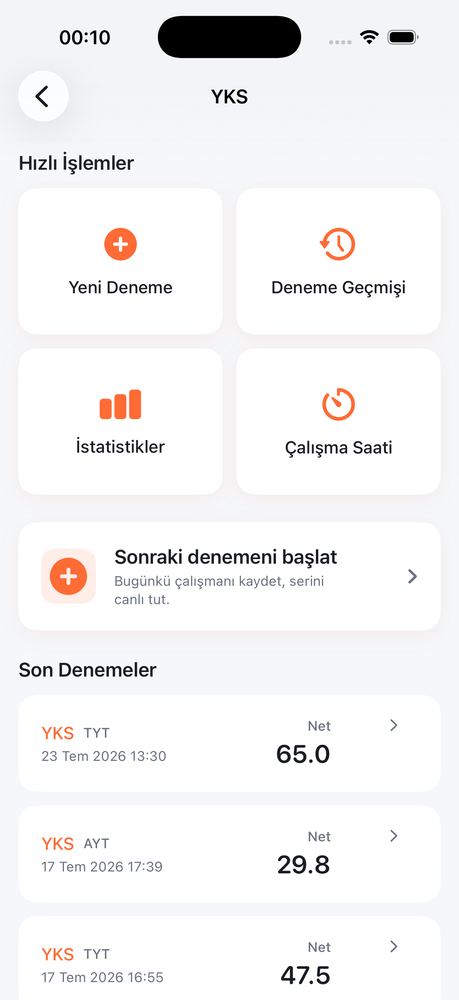
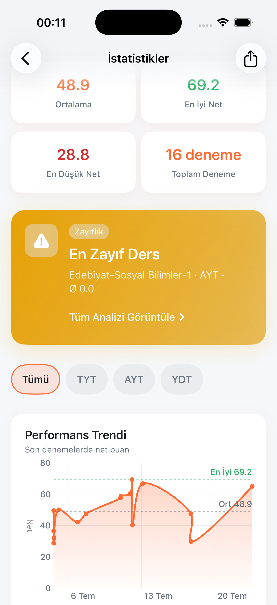
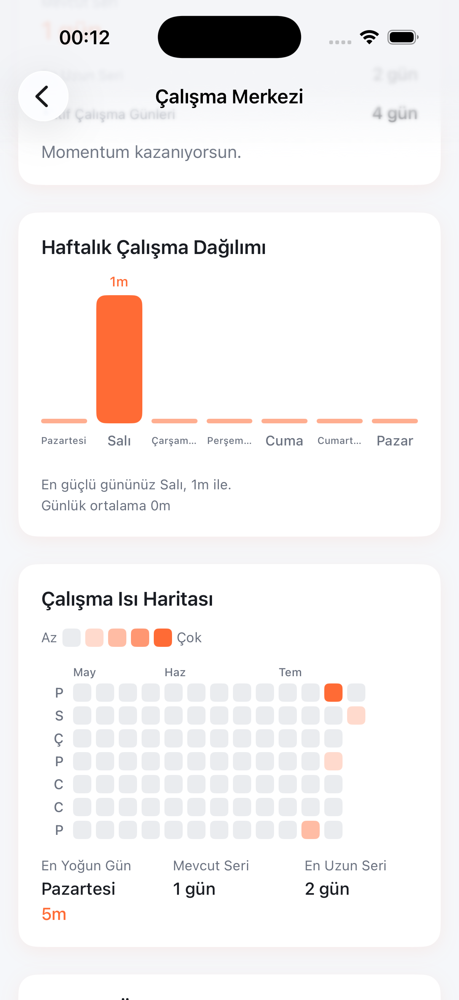

Deneme Takibi
Deneme sınavı sonuçlarınızı kaydedin. Doğru, yanlış ve boş sayılarını girerek net puanınızı otomatik hesaplayın.
Korteks: Deneme Takip & Analiz
Korteks; LGS, YKS, KPSS ve TUS adayları için deneme takibi, net hesaplama, konu analizi ve istatistik sunan bir iOS uygulamasıdır. Hazırlık sürecinizi düzenli, anlaşılır ve ölçülebilir hale getirir.
Uygulama
SwiftUI ile geliştirilen Korteks, Türkiye'nin ulusal sınavlarına hazırlanan öğrenciler ve adaylar için tasarlanmış bir hazırlık aracıdır.
Korteks, deneme sınavı sonuçlarınızı kaydetmenizi, net puanlarınızı otomatik hesaplamanızı ve zaman içindeki gelişiminizi net bir şekilde görmenizi sağlar. Çalışma oturumlarınızı zamanlayıcı ile planlayabilir, hedeflerinizi takip edebilir ve ilerlemenizi başarımlarla kayıt altına alabilirsiniz.
Uygulama; Firebase Authentication ile güvenli oturum açma, Firestore ile bulut senkronizasyonu ve çalışma oturumlarının cihazda yerel olarak saklanması gibi özellikler sunar. Apple Human Interface Guidelines ile uyumlu arayüzü, Türkçe ve English dil desteğiyle birlikte gelir.
Özellikler
Korteks'teki her özellik, sınav hazırlığında gerçek bir ihtiyaca yanıt vermek üzere tasarlanmıştır.
Deneme sınavı sonuçlarınızı kaydedin. Doğru, yanlış ve boş sayılarını girerek net puanınızı otomatik hesaplayın.
Deneme geçmişinizi görselleştirin. Net trendlerinizi ve genel performans özetinizi tek bakışta inceleyin.
Ders ve konu bazında performansınızı analiz edin. Hangi alanlarda gelişmeniz gerektiğini belirleyin.
Odaklanmış çalışma oturumları planlayın. Zamanlayıcı ile çalışma sürenizi ölçün; oturumlar cihazınızda yerel olarak saklanır.
Net ve performans hedefleri belirleyin. İlerlemenizi takip ederek hazırlık planınızı somut hedeflerle yönetin.
Düzenli çalışma ve gelişim kilometre taşlarınızı başarımlarla kayıt altına alın. Motivasyonunuzu sürdürün.
Son denemelerinizi, hedeflerinizi ve çalışma özetinizi tek bir ekranda görün. Hazırlık durumunuzu hızlıca değerlendirin.
Deneme ve profil verileriniz Firebase Firestore ile cihazlar arasında güvenli şekilde senkronize edilir.
Yerel bildirimlerle çalışma hatırlatmaları alın. Hazırlık rutininizi düzenli tutmanıza yardımcı olur.
Sistem tercihinize uyum sağlayan açık ve karanlık tema desteği. Gece çalışmalarında göz konforu sağlar.
Uygulama arayüzü Türkçe ve English dillerinde kullanılabilir. Tercih ettiğiniz dilde çalışın.
Çalışma zamanlayıcısı aktifken kilit ekranından ve Dynamic Island'dan sürenizi takip edin.
Sınavlar
Korteks, Türkiye'nin önde gelen ulusal sınavlarına hazırlanan adaylar için tasarlanmıştır. Her sınav türü için uygun net hesaplama kuralları desteklenir.
Liselere Geçiş Sistemi — ortaokul son sınıf öğrencilerinin liseye yerleştirilmesi için yapılan merkezi sınav. Korteks, LGS denemelerinizin net hesaplamasını destekler.
Yükseköğretim Kurumları Sınavı — üniversiteye giriş sınavı. YKS denemelerinizi kaydedin; sınav türüne uygun net hesaplama kuralları uygulanır.
Kamu Personeli Seçme Sınavı — kamu kurumlarına personel alımı için yapılan sınav. KPSS denemelerinizi kaydedin ve performansınızı izleyin.
Tıpta Uzmanlık Eğitimi Giriş Sınavı — tıp mezunlarının uzmanlık eğitimine kabulü için yapılan sınav. TUS denemeleriniz için net hesaplama desteği sunulur.
Net Hesaplama
Her sınav türünün kendine özgü net hesaplama kuralları vardır. Korteks, LGS, YKS, KPSS ve TUS için geçerli kuralları uygulayarak net puanınızı otomatik hesaplar.
Nasıl Çalışır
Korteks'i kullanmaya başlamak birkaç dakika sürer. Hesabınızı oluşturun, sınavınızı seçin ve hazırlığınızı takip etmeye başlayın.
E-posta ve şifre ile Firebase Authentication üzerinden güvenli bir hesap oluşturun.
LGS, YKS, KPSS veya TUS arasından hazırlık yaptığınız sınav türünü belirleyin.
Deneme sınavı sonuçlarınızı girin. Net puanınız otomatik hesaplansın ve geçmişiniz kaydedilsin.
İstatistikler, konu analizi ve hedeflerle ilerlemenizi ölçün. Eksik alanlarınıza odaklanın.
Gizlilik
Korteks, verilerinizi korumayı önceliklendirir. Uygulamada yalnızca gerçekten uygulanan gizlilik özellikleri sunulur.
Hesabınıza Firebase Authentication ile e-posta ve şifre kullanarak güvenli şekilde giriş yaparsınız.
Deneme ve profil verileriniz Firebase Firestore ile cihazlar arasında senkronize edilir.
Çalışma zamanlayıcısı oturumları cihazınızda yerel olarak saklanır; buluta aktarılmaz.
Uygulamada reklam SDK'si, üçüncü taraf izleme, analitik araçları veya kişisel veri satışı bulunmaz.
Önizleme
Korteks arayüzünün temiz ve odaklanmış tasarımı.



SSS
Korteks hakkında en çok merak edilen konular.
Korteks; LGS, YKS, KPSS ve TUS sınavlarına hazırlanan adaylar için tasarlanmıştır. Her sınav türü için uygun net hesaplama kuralları desteklenir.
Deneme ve profil verilerinizin cihazlar arasında senkronize edilmesi için Firebase Authentication ile e-posta ve şifre kullanarak bir hesap oluşturmanız gerekir. Çalışma zamanlayıcısı hesap olmadan da kullanılabilir; ancak oturumlar yalnızca o cihazda kalır.
Deneme ve profil verileriniz Firebase Firestore ile bulutta senkronize edilir. Çalışma zamanlayıcısı oturumları ise yalnızca cihazınızda yerel olarak saklanır.
Evet, kısmen. Deneme kayıtları önce cihazınıza kaydedilir; internet bağlantınız olduğunda hesabınızla senkronize edilir. Çalışma zamanlayıcısı tamamen çevrimdışı çalışır. Bulut senkronizasyonu için internet bağlantısı gereklidir.
Korteks arayüzü Türkçe ve English dillerinde kullanılabilir.
Hayır. Korteks'te reklam SDK'si, üçüncü taraf izleme veya analitik araçları bulunmaz. Kişisel verileriniz satılmaz.
Deneme sonuçlarınızı kaydedin, netlerinizi hesaplayın ve ilerlemenizi ölçülebilir hale getirin. Korteks, sınav hazırlığınızı düzenli tutmanıza yardımcı olur.
iOS 17.0 veya üzeri gereklidir. Türkçe ve English dil desteği.